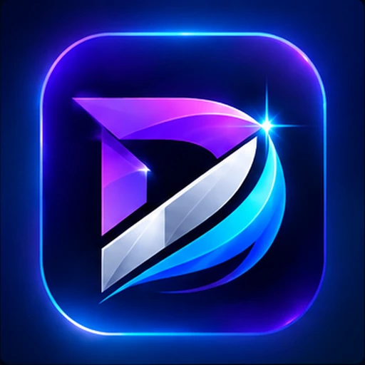

DAVONIUM NEXUS
You are offline
The Nexus application shell is available, but live company data and secure actions require internet. Private records are not cached on this device.

The Nexus application shell is available, but live company data and secure actions require internet. Private records are not cached on this device.